Results
1. Spatial Distribution of Opportunities (Jobs, Schools, Health) on the H3 Grid
Although each opportunity type displays a distinct spatial pattern, all share a common tendency toward concentration in Manhattan and Northwest Brooklyn. Figure 3 illustrates the mapped distribution of the three social determinants and highlights clear spatial variation across the city. The income distribution map shows a strong clustering of the high-income households in Lower Manhattan, as well in parts of Northwest Brooklyn, particularly neighborhoods such as Williamsburg, DUMBO, and Brooklyn Heights.
The Jobs distribution map similarly reveals a high concentration in Manhattan. However, unlike income, job density extends more broadly into Downtown Brooklyn, the Bronx’s employment centers, and portions of western Queens near Long Island City. The spatial distribution of schools shows a different pattern: school facilities are most densely concentrated in the Bronx, followed by Brooklyn, with Manhattan. Despite variation in the specific locations of intensity, the three opportunity layers demonstrate that Manhattan and Northwest Brooklyn exhibit higher concentrations of key social determinants than the rest of New York City.
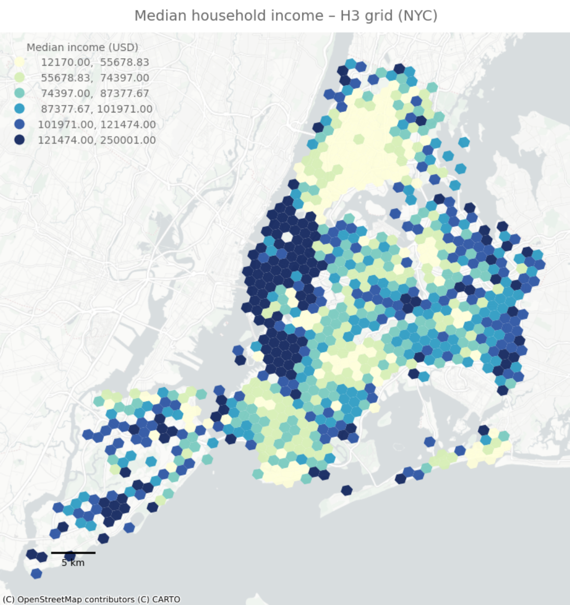
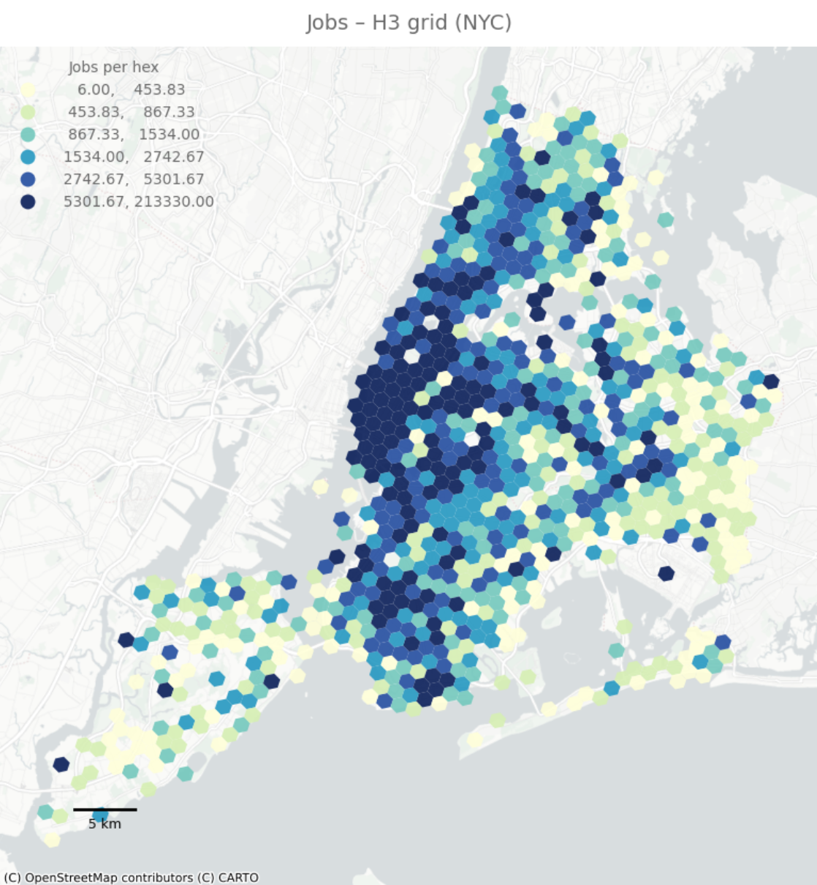
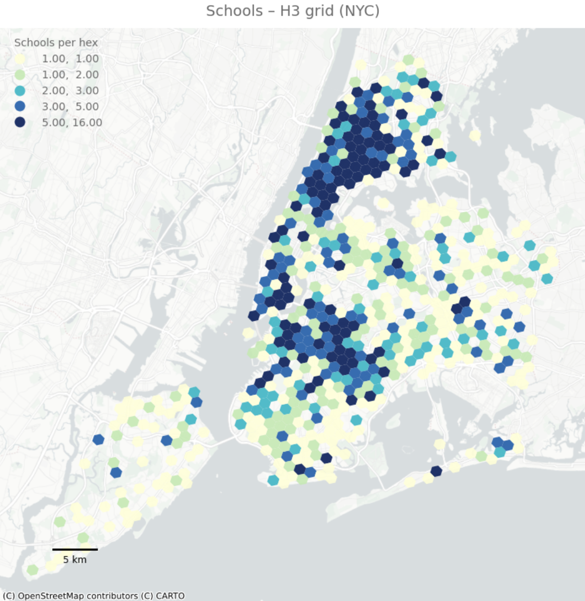
Figure 3. Spatial distribution of income, jobs, and school accessibility on the H3 grid.
2. Open Streets Distribution
The spatial distribution of Open Streets follows the similar pattern observed in job opportunity distributions. As shown in Figure 4, Open Streets are heavily clustered in Lower Manhattan, Northwest Brooklyn, and the Jackson Heights area in Queens. In contrast, they are absent or appear at low density in outer-borough areas such as eastern Queens, southern Brooklyn, and Staten Island. Although the overall intensity of Open Streets is sparser than that of the opportunity variables, the program’s distribution similarly reflects a strong alignment with the lower Manhattan to Northwest Brooklyn corridor.
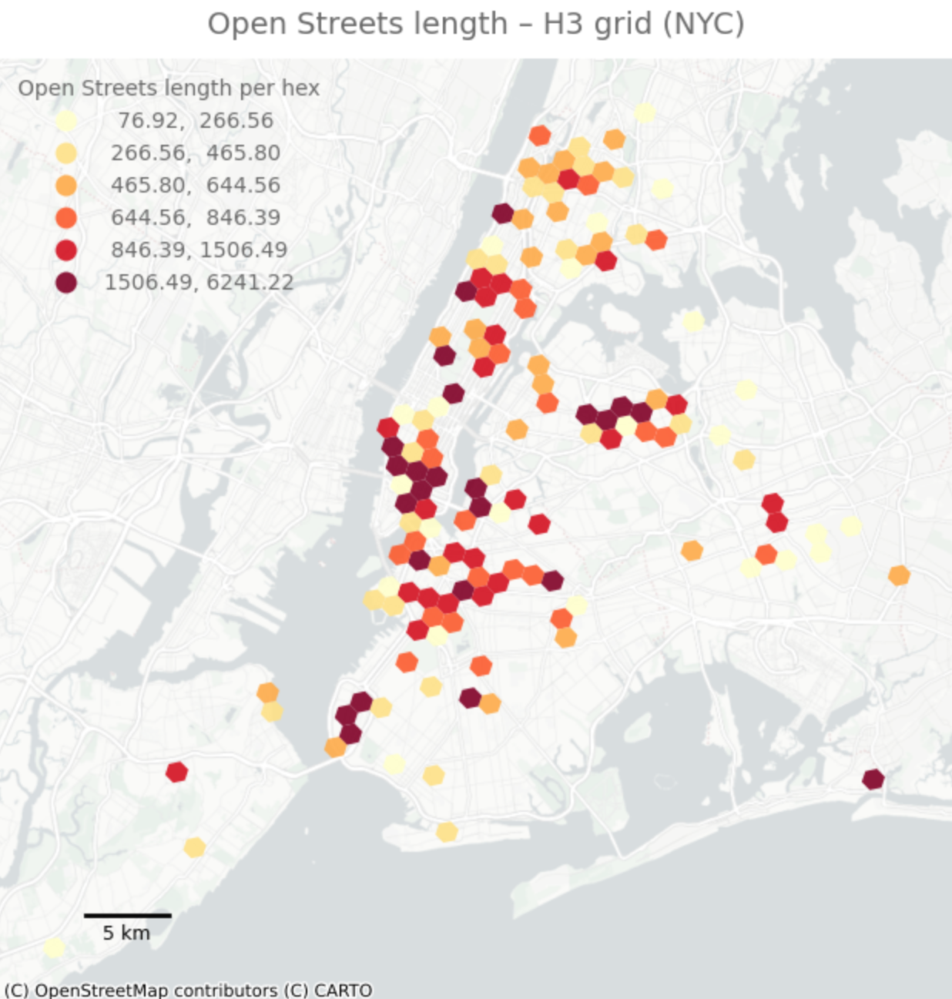
Figure 4. Spatial Distribution of Open Streets Length
3. Normalized Accessibility Index (AS_base_norm)
The common pattern between the distribution of opportunities and the distribution of Open Streets becomes even clearer when examining the normalized accessibility measure. Normalized accessibility represents each hexagon’s accessibility score that is derived from the cumulative opportunities within its k-ring catchment, and rescaled to a 0 - 1 range for comparability across variables. Figure 5, the normalized accessibility map shows a clear pattern of high accessibility extending through Manhattan, the Bronx, and Northwest Brooklyn, illustrated by the concentration of higher values (green shading). In contrast, areas with limited distributions of both opportunities and Open Streets appear with lower accessibility scores (yellow to red), reinforcing the raised concerns on the equity on the distribution. Taken together, these patterns raise the question of whether the concentration of Open Streets is directly correlated with underlying opportunity accessibility.
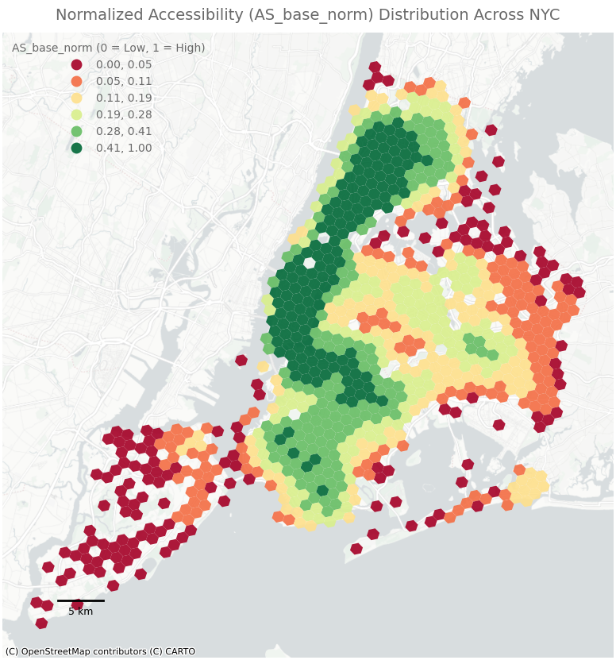
Figure 5. Normalized Accessibility (AS_base_norm) Distribution Across NYC
4. Regression Analysis: Predictors of Open Streets Placement
The two regression models directly address whether the shared spatial patterns observed in Manhattan and Northwest Brooklyn are statistically correlated with Open Streets placement. Together, they demonstrate that Open Streets are disproportionately concentrated in socioeconomically advantaged and high-access areas.
The first regression model examines the composite accessibility index, summarizing access to jobs, schools, and health facilities. This reveals significant relationships between Open Streets and both baseline accessibility and income. As shown in Table 2, baseline accessibility (AS_base) is a strong predictor of Open Street length (β = 793.84, p < 0.001), indicating that areas with greater access to key opportunities host substantially more Open Streets.Median household income is also positively associated with Open Streets density (β = 0.0013, p = 0.002), suggesting that higher-income neighborhoods are more likely to receive program investment. Although the model’s explanatory power is modest (R² = 0.069), the consistency and significance of both predictors highlight a clear pattern: Open Streets are more prevalent in high-access, higher-income areas. These findings point to potential spatial inequities in the program’s implementation.
The second model disaggregates the components of accessibility to identify which opportunity types are most strongly associated with Open Streets placement. This determinant-specific regression shows that jobs and schools are the primary drivers of Open Streets distribution. Employment density is positively and significantly associated with Open Streets (β = 0.0037, p = 0.001), indicating a tendency for Open Streets to cluster in job-rich areas. School density exhibits the largest effect among all predictors (β = 38.20, p < 0.001), suggesting a particularly strong relationship between educational institutions and program placement. In contrast, health facility density shows no significant association (p = 0.820), indicating that Open Streets do not systematically align with health-service accessibility. Median household income remains a significant positive predictor in the second model (β = 0.0013, p = 0.006), reinforcing evidence of socioeconomic disparities.
Taken together, the two models demonstrate that Open Streets are concentrated in job-dense, school-dense, and higher-income neighborhoods, highlighting equity concerns in the spatial distribution of the program.
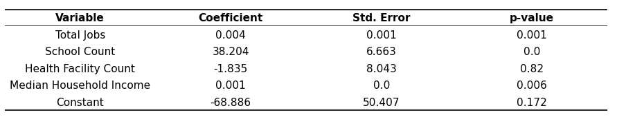
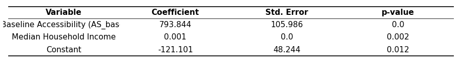
Table 2. OLS Regression Results of Composite Accessibility Model
Table 3. OLS Regression Results of Disaggregated Accessibility Model
5. Equity Diagnostics
The quartile analysis further reinforces the inequities identified in the regression models, showing that high-income and high-access neighborhoods systematically receive more Open Streets.
The first quartile analysis, grouping hexagons by income (Table 4), shows a clear upward trend of higher-income areas hosting more Open Streets on average. The highest-income quartile (Q4) contains approximately 194 meters of Open Streets, which is 54 percent more than the lowest-income quartile (Q1). Although the middle quartiles display some variation, the overall pattern indicates that Open Street infrastructure is disproportionately located in higher-income neighborhoods.
The disparities become even more pronounced when quartiles are grouped by baseline accessibility (AS_base), as shown in Table 5. Hexagons with the lowest accessibility (Q1) contain almost no Open Streets, averaging only 12 meters, whereas the highest-access quartile (Q4) contains an average of 321 meters. This represents a twenty-six-fold difference between the lowest- and highest-access areas. Such a stark contrast demonstrates that Open Streets have been disproportionately allocated to neighborhoods that already possess strong access to jobs, schools, and health facilities, further amplifying existing spatial advantages.
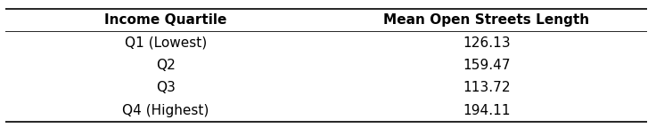
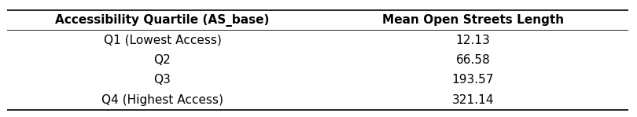
Table 4. Mean Open Streets Length by Income Quartile
Table 5. Mean Open Streets Length by Accessibility Quartile
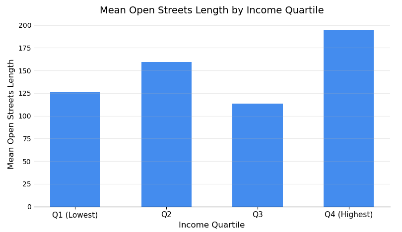
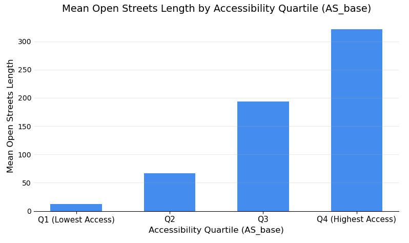
Figure 6. Bar Graph for Mean Open Streets Length by Income Quartile
Figure 7. Bar Graph for Mean Open Streets Length by Accessibility Quartile